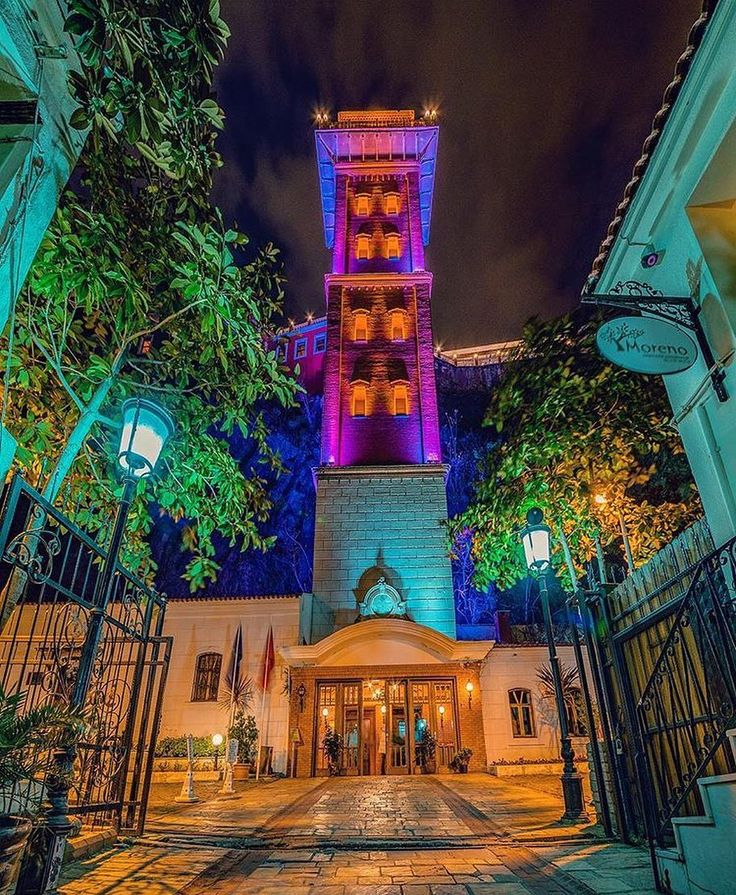
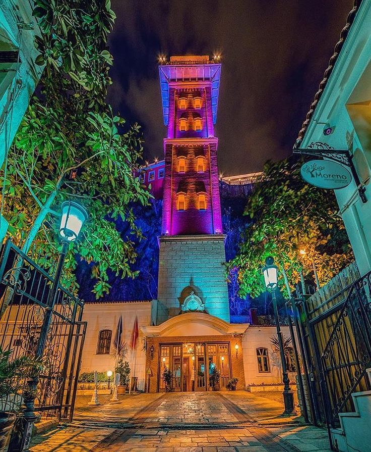

Nüfus
İzmir, yaklaşık 4.5 milyonluk nüfusu ile Türkiye'nin en kalabalık üçüncü şehridir.
Gezilecek Yerler
Kordon, Tarihi Asansör, Alsancak, Urla ve daha birçok yer İzmir'in gezilecek alanlarındandır.
Hava Koşulları
İzmir'de yazları sıcak ve kurak, kışları ise ılıman ve yağışlı geçer.
Lezzetler
Boyoz, kumru, gevrek gibi lezzetler İzmir'e özgüdür.
Tarihi Özellikler
İzmir, antik Smyrna kentinin üzerine kuruludur ve köklü bir tarihe sahiptir.
Yaşam Koşulları
İzmir, sosyal yaşamı, ulaşımı ve iklimi ile yaşam kalitesi yüksek bir şehirdir.
Kordon
Kordon, deniz kenarında yürüyüş yapılabilen, kafelerin sıralandığı İzmir’in en popüler yerlerinden biridir.
Urla
Urla, doğal güzellikleri, sahil kasabası havası ve lezzetli restoranlarıyla ünlüdür.
Alsancak-Bornova
Alsancak canlı sosyal hayatı, Bornova ise genç nüfusu ve öğrenci yaşamı ile dikkat çeker.
Tarihi Asansör
Asansör, 1907 yılında inşa edilmiş olup İzmir’in simgelerinden biridir. Seyir terasından harika manzaralar izlenebilir.
Efes Antik Kenti
Efes, antik Roma dönemine ait kalıntıları ile ünlü bir arkeolojik alandır.